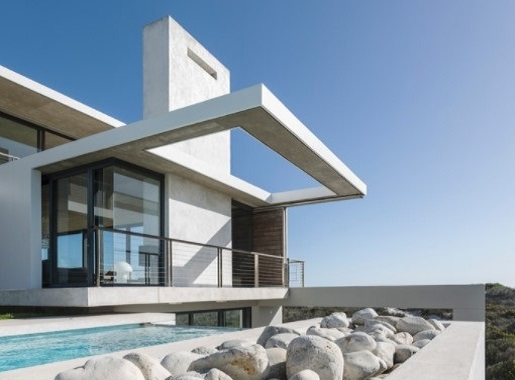
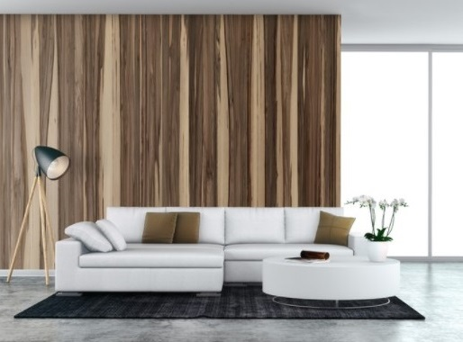
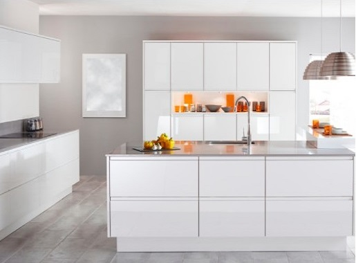
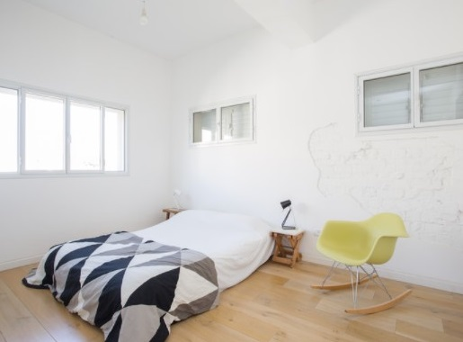

Apartamentos
Atico Duplex
Apartamentos de aproximadamente 120 m2 divididos en dos plantas. En la primera se encuentras 2 o 3 dormitorios independientes con dos camas individuales cada uno, 2 baños completos, salón comedor y cocina independiente. La planta superior es una buhardilla con 2 camas individuales con suficiente espacio para añadir más camas y terraza privada.